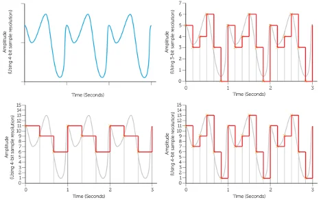

Lesson
Sample - Measure of the analogue signal at a given point in time
Sample rate - number of samples taken per second and is measured in Hertz.
Sample resolution - number of bits used to represent each sample
The size of sound files can be calculated using:
size of file = length (seconds) x sample rate x sampling resolution
For sound to be stored digitally on a computer it needs to be converted from its continuous analogue form into a discrete binary values. The steps are:
- Microphone detects the sound wave and converts it into an electrical (analogue) signal
- The analogue signal is sampled at regular intervals
- The samples are approximated to the nearest integer (quantised)
- Each integer is encoded in binary with a fixed number of bits


Learning Videos
For more information click on the tab below to watch a video about the lesson.
Click for video - Representing sound
Questions
-
The first sound pattern below has been recorded three times using different digital sampling settings.
Calculate the file size of the each of the recordings A to C: (Show your workings)
A: Resolution has 8 points - 0-7. 3 bits per sample required to give a maximum of eight unique sample values. Frequency is 6hz or 6 times per second over three seconds = 18 sampled points 18 x 3bits = 54bits
Note: This is a fractional sample of a sound wave, with a heavily simplified resolution and sample frequency. In reality, sound would be sampled many thousands of times a second (CD quality is at 44.1kHz or 44,100 samples per second) at a much higher resolution of perhaps 32 bits, (16bits for each stereo channel - Left and Right) producing much larger files! This example, with a sample resolution of only 3 bits per sample, and only six samples over 1 second, amounts to 18bits/s or bits per second. Bits per second is a measurement of recording quality. Even a compressed MP3 file would be recorded at at least 128kbits/s or 128,000bits/s.
B: 16 sampling levels requires 4 bits per sample x 9 samples
9 x 4bits = 36bits
C: 16 sampling levels requires 4 bits per sample x 18 samples
18 x 4bits = 72bits / 8 = 9 Bytes
Allow one mark for each correct answer and an additional mark for the correct method.
-
Which of the recordings above will be of the highest quality?
Recording C as it has the highest resolution and samples are taken more frequently.
-
State a device that is used to capture an analogue sound signal.
Microphone
-
The length of a recording will heavily influence the size of the sound file. State two factors other than recording length that determine the file size of a recording.
Sampling rate / interval / frequency.
Sample resolution / (audio) bit depth.
Go Back